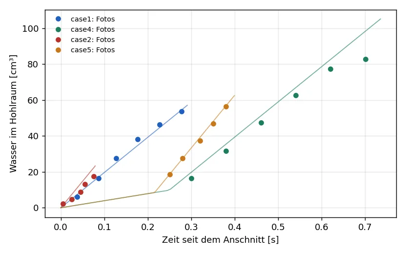

1. Grundsatz
Die drei Quellen zur Füllung haben neben ihren Versuchen auch eigene Simulationen veröffentlicht (TopCAST, MAGMASOFT, FLOW-3D). Die Solver werden nur an den Versuchen gemessen: an den Fotos und an den Größen, die die Autoren aus ihren Videos gemessen haben. Die fremden Simulationen dienen höchstens als Hinweis, wo ein Modell an Grenzen kommt.
Aus jeder Veröffentlichung wird entnommen: die Geometrie (als OpenSCAD-Modell, aus den bemaßten Zeichnungen und Maßen in den Bildern), die Versuchseinstellungen (Füllgrad, Schusskurve, Vakuum, Stoffwerte), die Fotos der Füllung und die gemessenen Kurven. Jede Zahl ist gekennzeichnet: in der Quelle angegeben, aus einer Abbildung gemessen oder angenommen.
2. Vom Foto zum Feld
Jedes Foto wird auf die Modellebene der Geometrie gelegt und in einen Wasseranteil je Bildpunkt umgerechnet, auf einem Raster von 0,25 mm.
- Lage: Merkmale, die in jedem Bild zu sehen sind: die dunkle Scheibe der Gießbüchse (Niida), die Insel (Trometer), der Umriss des Modells (Simulationsbilder). Die Umrisslinie des Modells liegt nach der Zuordnung auf den Kanten im Foto.
- Wasseranteil: Wasser mit Farbstoff schluckt Licht nach Lambert und Beer. Der Anteil der Plattendicke, den das Wasser füllt, ist daher die Extinktion $A = -\ln(I/I_0)$ im Verhältnis zur Extinktion der vollen Dicke, nicht der lineare Farbwert. $I_0$ ist dabei die Helligkeit des trockenen Acryls an derselben Stelle: die Fotos sind ungleichmäßig ausgeleuchtet (heller oben, dunkler an den Rändern), und ein einziger Leerwert je Foto las die dunkleren Teile als dünnen Wasserfilm. Die Helligkeit des trockenen Acryls wird deshalb je Foto als glatte Fläche durch das Acryl rund um die Platte gelegt, das immer trocken ist. Anteile unter 0,04 sind Rauschen der JPEG-Kompression und zählen als trocken.
- Rückstände: Bei Trometer liegen auf der Form Reste früherer Schüsse, am deutlichsten als Band auf der Oberkante der Insel. Zu Beginn der Füllung zählt deshalb nur Wasser, das mit dem Zulauf am Boden des Hohlraums zusammenhängt; was dort nicht hinkommen kann, gilt als trocken.
- Ränder: Der Rand der Form ist in den Fotos über etwa 2 mm unscharf; selbst im vollen Hohlraum steigt der Wasseranteil von etwa 0,5 an der Wand erst 2 mm weiter innen auf 1. Dieser Streifen entlang aller Wände und um die Insel wird nicht bewertet. Bei Trometer las die Auswertung ihn zuvor als Luftnest um die Insel von 350 bis 660 mm² in jedem Foto der mittleren Füllung.
- Überlauf: Wasser kommt nur durch den Hals aus dem Hohlraum in den Überlauf. Nasse Stellen im Überlauf, die nicht über den Hals mit dem Wasser im Hohlraum zusammenhängen, sind Rückstände, Flecken oder Licht am Rand des Fotos und gelten als trocken (bei Niida zuvor 150 bis 690 mm² je Foto, auch wenn das Wasser die Oberkante des Hohlraums noch nicht erreicht hatte).
- Verdeckt: Stellen, die im Foto nicht zu sehen sind, werden ausgeblendet und nicht bewertet: bei Niida der Anschnitt vor der dunklen Scheibe der Gießbüchse und der Anschluss der Entlüftung im Überlauf mit seinem Schatten, bei Trometer der Pressrest und die Engstelle hinter der Gießkammer mit dem Kolben (bis 22 mm über der Achse) und der Anschluss der Vakuumleitung.
Wasser ist inkompressibel: das Wasservolumen im Hohlraum muss zwischen zwei Fotos genau um die vom Kolben
verdrängte Menge wachsen, $\Delta V = A_K\,v_K\,\Delta t$, und der Bildabstand ist bekannt (60 Bilder je
Sekunde). Mit der Extinktion gegen die örtliche Helligkeit ergeben die Fotoreihen von Niida 88, 98 und
103 % der Verdrängung; die vierte (case2, fünf Bilder in 0,07 s mit auf 0,01 s gerundeten Zeiten)
76 %, ihre Steigung ist auf etwa 15 % unsicher. Der lineare Farbwert ergab 69 bis 132 %: er überschätzt
dünnes Wasser.

| Fotoreihe | Anschnitt auf der Videouhr [s] | Anstieg / Verdrängung |
|---|---|---|
case1 | 8,332 | 97 % |
case4 | 8,394 | 85 % |
case2 | 8,675 | 74 % |
case5 | 8,751 | 95 % |
3. Die Zeitachse
Die Zeiten unter den Fotos sind Zeiten der Videouhr mit beliebigem Nullpunkt. Die Rechnung beginnt, wenn das Wasser den Anschnitt erreicht. Die Massenbilanz liefert für jede Fotoreihe diesen Zeitpunkt auf der Videouhr: eine Gerade durch das Wasservolumen der Fotos, mit der bekannten Kolbengeschwindigkeit und dem bekannten Umschaltpunkt. Damit hat jedes Foto eine Zeit seit dem Anschnitt. Beim Vergleich wird nur noch eine kleine Korrektur von höchstens ±0,03 s zugelassen, die Unsicherheit der Farbkalibrierung; sie wird so gewählt, dass das Wasservolumen in Foto und Rechnung übereinstimmt, nicht die Form. So gehen die Formkennzahlen nicht in die Zuordnung ein.
4. Kennzahlen
| Kennzahl | Messung | Rechnung |
|---|---|---|
| Fläche (IoU) | Bildpunkte mit Wasseranteil über 0,5 | über die Plattendicke gemittelter Anteil über 0,5, gleiches Raster |
| Front | höchster Punkt mit Wasser im Hohlraum | ebenso |
| Eingeschlossene Luft (Niida) | Abb. 6 der Quelle, aus den Videos gemessen | das Bildverfahren der Quelle auf das gerechnete Feld: Volumen zwischen Wänden und freier Oberfläche minus Wasservolumen |
| Luftnester (Trometer) | trockene Fläche im Hohlraum bei gleichem Füllstand | ebenso |
IoU ist die Schnittmenge der beiden Wasserflächen geteilt durch ihre Vereinigung: 1 heißt deckungsgleich, 0 heißt keine Überlappung.
5. Die Fälle
Zamora und López
Welle in der Gießkammer; eingeschlossene Luft in 13 gemessenen Einstellungen, RMSE 0,012.
Zum Fall6. Ergebnis
Abschluss der Validierung am 05.10.2026. Verglichen ist jeweils mit den Messungen der Autoren, nicht mit ihren Rechnungen. Die Grundeinstellungen unten sind die, mit denen die Fälle jetzt im Projekt liegen.
| Fall | Grundeinstellung | trifft die Messung | offen |
|---|---|---|---|
| Niida und Maeda 2020 dieLogicFoam |
Anschnitt 30 mm breit, 10 mm tief in der Bohrung der Büchse, dort 0,5 mm; Anschnitt zu Beginn gefüllt; Reibung dünner Wandfilme; realisierbares k-ε | eingeschlossene Luft bei P1 auf 85 bis 91 % der Messung am Ende (RMSE 5,9 bis 12,1 cm³), bei P2 RMSE 3,0 bis 7,4 cm³; Fotos der langsamen Füllung und bei 100 mm/s (dicke Fläche IoU 0,91) | Strahl aus dem Anschnitt behält zu viel Impuls: bei P1 Front zu hoch, Ecken des Trichters leer; nach dem Umschalten bei P2 See zu unruhig. Gemessene Luft selbst um 20 bis 35 % unsicher |
| Trometer et al. 2023 dieLogicFoam |
laminar, 1 mm, 5 Zellen über die Dicke; zu Beginn in Ruhe (Pressrest bis zum Wasserspiegel der Kammer); Entlüftung auf der Seite der Kammer | Füllstand bei allen Drücken (Wasser IoU am Ende 0,86 bis 0,96); Luftnester der mittleren Füllung in denselben Seitenkanälen (mit 5 mm Toleranz 52 % bei 200 mbar) | Fächer des ersten Einlaufs (Tiefe des Anschnitts in der Quelle nicht angegeben); Nester an den oberen Ecken der Insel am Ende; Füllgrad der Gießkammer nicht angegeben |
| Zamora und López 2007/2008 shotSleeveFoam |
unverändert | eingeschlossene Luft über 13 Einstellungen, RMSE 0,012 von V/(AL), im Mittel 0,005 darüber; Optimum und Wiederanstieg beim Überschlagen der Welle | gerechnetes Optimum bei Füllgrad 0,374 etwas höher (0,015 statt 0,001) |
Was die Validierung am Modell geändert hat
- 26.09. Niida: Anschnitt 30 statt 22 mm breit, nach dem Modell der Autoren und dem Foto des vollen Hohlraums.
- 27.09. Niida: k-omega SST statt laminar.
- 28.09. Niida: Anschnitt 10 mm tief in der Bohrung der Büchse, 0,5 mm im Übergang.
- 01.10. Niida: Anschnitt unterhalb der Oberkante der Büchse zu Beginn gefüllt; Reibung
dünner Wandfilme (neue Option
wallFilmFrictionin dieLogicFoam). - 02.10. Trometer: Wasser zu Beginn in Ruhe, die Entlüftung auf der Seite der Kammer. Vorher stand das Wasser als Wand an der Form neben dem leeren Pressrest, ein Fehler des Modells.
- 04.10. Niida: realisierbares k-ε statt SST.
- Werkzeuge: Auswertung der Fotos mit lokalem Hintergrund und bereinigten Masken, Vergleich bei gleicher
Füllung (
fillmatch.py), Videos mit Schnitt durch die Gießkammer (fieldvideo.py --kammer), flache Bereiche im Vernetzer (paperDieMesh.py,shallow).
Jede Änderung ist auf der Seite des Falls mit den Rechnungen davor und danach belegt; die früheren Grundeinstellungen stehen als eigene Zeilen in den Tabellen.